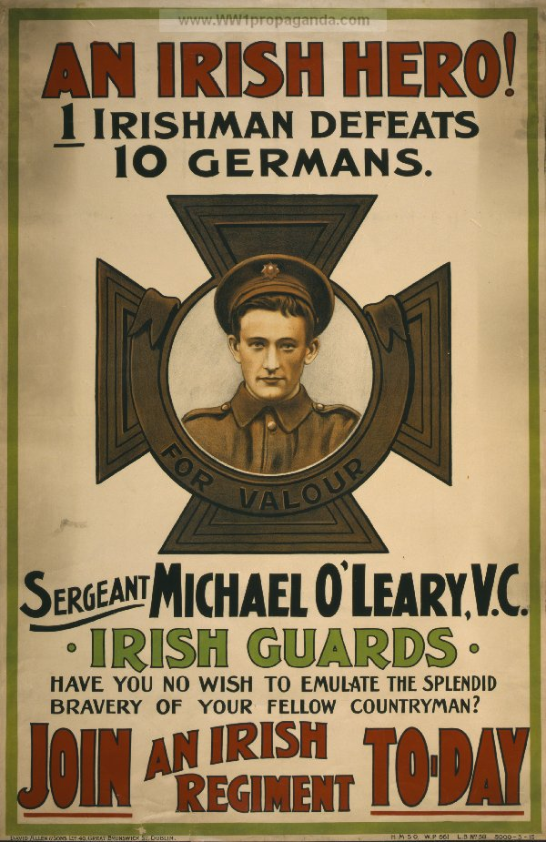

Speaker
The Irish government
Occasion
Ireland was attempting to recruit in 1915 for WWI.
Audience
Men who have not yet enlisted in the Irish Guard.
Purpose
To convince Irishmen that they can all be brave and fight German soldiers no matter who they are.
Subject
O’Leary’s accomplishment during the war, and encouraging more to join the army.
Strategies
Appeal to religion/authority
The medallion is in the shape of a celtic cross, a religious symbol.
Use of text size for emphasis
Join an Irish regiment today is heavily emphasized. This is to pull the reader’s eyes to that line.
Bandwagon/Appeal to Patriotism
“Fellow countryman” implies that many Irish are joining the guard.
False dilemma
“Have you no wish..?” is directly implying the reader can only be brave by joining the Irish guard.
False Attribution
While sergeant O’Leary might’ve defeated 10 Germans, the wording implies that any Irishman can defeat 10 Germans.